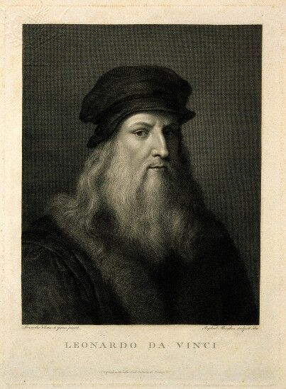

Salvator Mundi is a painting by Leonardo da Vinci. The name is Latin for Savior of the World. It was created around 1499-1510, during the High Renaissance. It was lost for a long time, but was recently rediscovered. The painting depicts Jesus making the sign of the cross in his right hand and holding a crystal orb in his left hand.
The painting was in the hands of Sir Charles Herbert Sheffield in 1763 who auctioned it. It was later lost from all records. It was probably placed in a gilded frame in the 19th century and remained like that for a few hundred years. In 2005, it was rediscovered, but it was thought to be a copy.
Salvator Mundi had been in the hands of many people, mainly royalty, from the 16th to 18th centuries. After being rediscovered, it was sold at an auction for only $10,000 to Alexander Parrish and Robert Simon because it was thought to be just a copy. After the new owners commissioned Dianne Dwyer Modestini at New York University to oversee the restoration, it was discovered that it was actually the original. The price skyrocketed after that, being sold to Yves Bouvier for over $75 million, and shortly after sold to Dmitry Rybolovlev for $127.5 million. In 2017, the painting was auctioned at Christie’s, and sold to Saudi Arabian prince Badr bin Abdullah for $450,312,500. This broke the record for the highest price a painting has ever sold for. Salvator Mundi still holds the title for most expensive painting to this day.